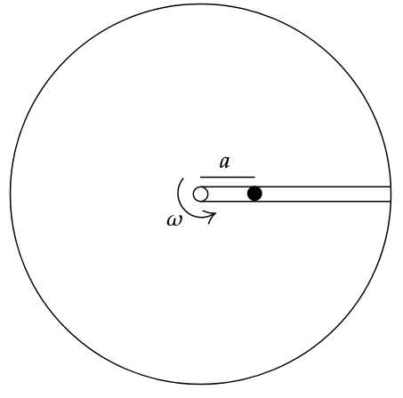

Solution:

Assuming, table to be infinitely large(ball doesn’t fall off).
Net force radially outward = \(mR\omega^2\)
Let \(r\) be the radial position at any time.
\[\ddot{x} = \omega^2 r\]
\[v \frac{dv}{dr} = \omega^2 r\]
\[\int_{0}^{v} v dv = \int_{a}^{r} \omega^2 r dr\]
\[v = \omega \sqrt{r^2 - a^2} \]
\[\int_{a}^{r} \frac{dr}{\sqrt{r^2 - a^2}} = \int_{0}^{t} \omega dt\]
\[\ln | r+\sqrt{r^2 - a^2} | \Big|_{a}^{r} = \omega t \Bigr|_{0}^{t}\]
\[\ln \frac{r+\sqrt{r^2 - a^2}}{a} = \omega t\]
\[r + \sqrt{r^2 - a^2} = a e^{\omega t}\tag1\]
Reciprocating,
\[\frac{1}{r + \sqrt{r^2 - a^2}} = \frac{e^{-\omega t}}{a}\]
Rationalising,
\[\frac{r - \sqrt{r^2-a^2}}{a^2} = \frac{e^{-\omega t}}{a}\tag2\]
Adding (1) and (2), we get
\[2r = a(e^{\omega t} + e^{-\omega t})\]
We know that, for \(\alpha = 0\), \(\omega t = \theta\).
\[\therefore r = \frac{a}{2} ( e^\theta + e^{-\theta}) = a \cosh (\theta)\]